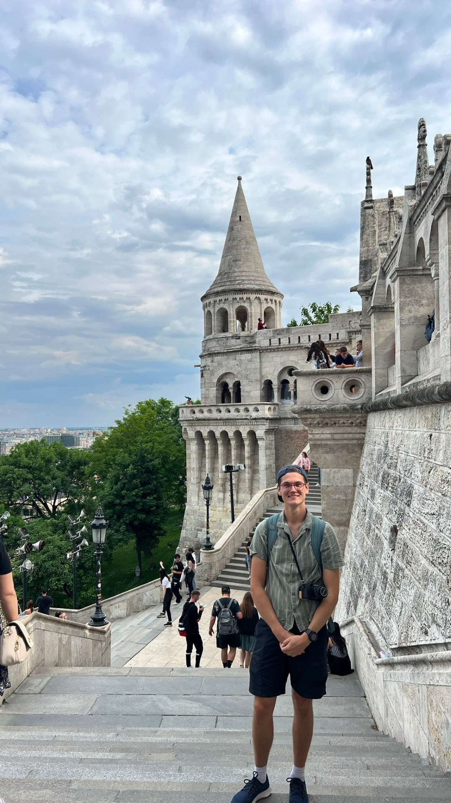

Brad Seeley
Portfolio Home
|
My background/education: I grew up in Brisbane, Australia, where I studied at the Queensland University of Technology. I completed a Bachelor of Engineering (Honours), Mechanical major and minors of Software Engineering and IT Breadth. Before going to university I completed a Certificate II in Engineering, working with tradespeople to maintain plant assets and repair equipment. In 2018/19 I completed an exchange program, spending a semester abroad in Birmingham UK. |
 |
|
Bachelor of Engineering (Honours) Major: Mechanical Minors: Software & IT |
My professional experience:
I have been working as an analyst/consultant for almost 7 years now.
My first role was an unpaid one in mining consulting, that I turned into a part-time position. I enjoyed this work and it supported me through the final years of university.
After a few years, I was keen to switch to more technical engineering. I moved to Airbus using my previous experience, aiming to move to the Engineering department.
Unfortunately, closure of a national contract saw me finish there in December 2023. With a move overseas in the coming months, I moved back to mining consulting to fill this gap.
Desire for technical experience:
I am particularly keen to delve into the technical side of engineering, as I have both the technical training and the desire to work on these projects.
This desire is a main reason I have been active in TeamArrow/World Solar Challenge, keeping my technical training in use, and using it in the real world.
Why am I now in the UK?
I moved to the UK with my partner to grow our personal and professional experiences.
Jess works in marketing in central London, and the exposure for both of us to the larger industries in the UK is incredible.
{kind=link}
{kind=link}